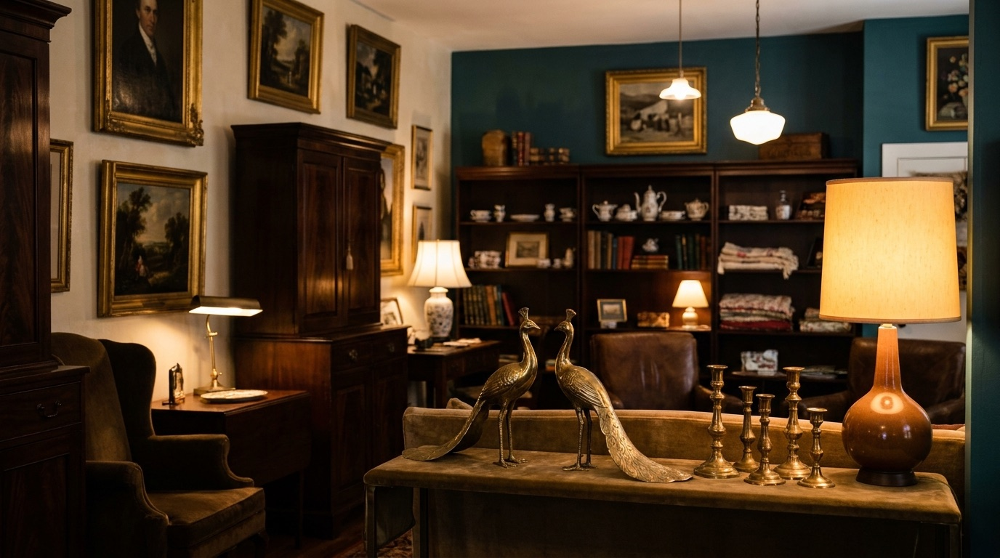
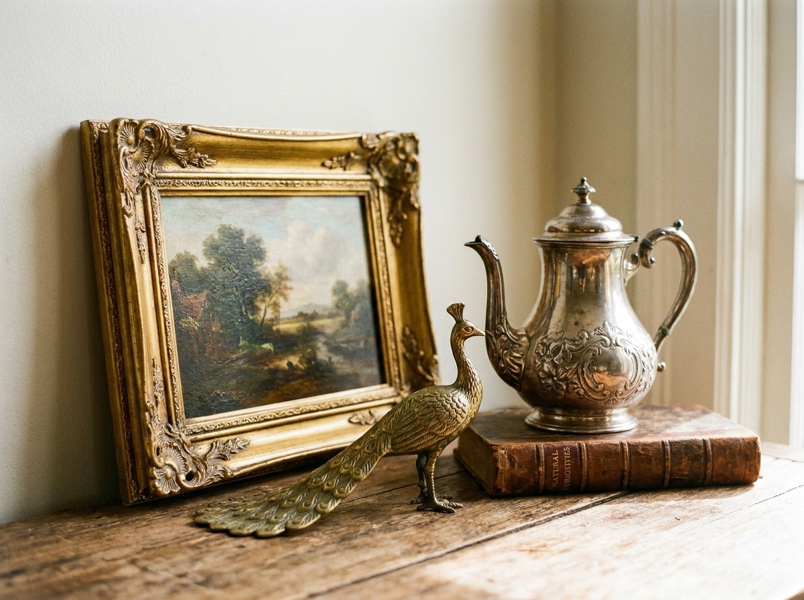

Curated antiques and vintage finds
Pieces chosen one at a time for character, not by the truckload. Each one earns its spot on the floor.

Antiques shop · Middleburg, Virginia
A small, owner-run shop of curated antiques on South Madison Street. Paintings, side tables, mid-century pieces, and one-of-a-kind finds that turn over often.
What you will find
Nothing here is bought twice. The shop is stocked one piece at a time, so the rooms look different week to week. Come in looking for a side table and leave with a painting you did not know you wanted. That is how it usually goes.
Pieces chosen one at a time for character, not by the truckload. Each one earns its spot on the floor.
Framed art and small furniture that work in a real room. Easy to carry home, easy to live with.
Clean lines and honest wood from the middle of the last century, mixed in among the older finds.
The things you cannot plan for. When they sell, they are gone, so it pays to stop in often.

Preview image. We will swap in the shop's own photos before launch.How it got its name
Beckwith Bolle opened the shop after buying a collection of antiques. In that lot were two brass peacocks, and the name stuck before the doors ever opened. The peacocks gave the place its character, and the rest of the floor grew up around them.
It is still owner-run today. Beckwith picks every piece, so the shop has a point of view. You are buying from the person who chose it, and that person can tell you where it came from.
Plan a visit →Come in for a side table. Leave with the painting you did not know you wanted.
Find the shop
We are in the village of Middleburg, in the heart of Virginia horse country. The collection turns over often, so the best way to see it is in person.
Wednesday – Saturday
Call ahead for the day's hours.